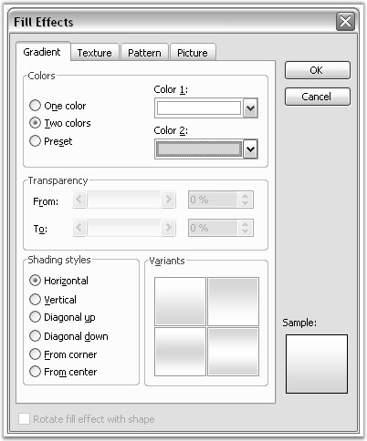

Background class represents the background color and fills effects in the Word document. The type of the background effect is defined by using the Type property. This property returns the value of BackgroundType type, and it can take the following variants.
· NoBackground: no background fill effect
· Gradient: gradient fill effect
· Picture: background picture
· Texture: texture fill effect
· Color: color fill effect
 Note: Pattern fill effect is not
supported.
Note: Pattern fill effect is not
supported.
Picture property defines the picture to be reflected as the document background (in case background type is set to BackgroundType.Picture). If the background type is BackgroundType.Texture, the background picture will be used as a picture for texture. So the background picture must be present in such cases.
Color property defines the color to be reflected as the document background (in case background type is set to BackgroundType.Color).
Gradient property defines the gradient to be reflected as the document background (in case background type is set to BackgroundType.Gradient). Gradient property returns the object of the BackgroundGradient class. For more details on BackgroundGradient class, refer the BackgroundGradient documentation.
WordDocument.Background property is used to access the DocIO document background. Background property of WordDocument is automatically initialized. If there is no background in the default DocIO document, it means that the Type property of the Background is set to NoBackground.
Public Properties
|
Name |
Description |
|
Color |
Gets or sets the background color. |
|
Gradient |
Gets or sets the background gradient. |
|
Picture |
Gets or sets the background picture. |
|
Type |
Gets the type of the background effect for the document. |
The following example illustrates how to use the Background class.
|
[C#]
IWordDocument doc1 = new WordDocument(); doc1.Open("Background.doc"); IWordDocument doc2 = new WordDocument(); doc2.EnsureMinimal();
switch (doc1.Background.Type) { case BackgroundType.Gradient: doc2.Background.Gradient = doc1.Background.Gradient.Clone(); break;
case BackgroundType.Picture: case BackgroundType.Texture: doc2.Background.Picture = doc1.Background.Picture; break;
case BackgroundType.Color: doc2.Background.Color = doc1.Background.Color; break;
default: break; }
doc2.Background.Type = doc1.Background.Type; doc1.Background.Type = BackgroundType.Color; doc1.Background.Color = Color.Red;
doc1.Save("Background.doc"); doc2.Save("BackgroundNew.doc"); |
|
[VB.NET]
Dim doc1 As IWordDocument = New WordDocument() doc1.Open("Background.doc") Dim doc2 As IWordDocument = New WordDocument() doc2.EnsureMinimal()
Select Case doc1.Background.Type Case BackgroundType.Gradient doc2.Background.Gradient = doc1.Background.Gradient.Clone()
Case BackgroundType.Picture, BackgroundType.Texture doc2.Background.Picture = doc1.Background.Picture
Case BackgroundType.Color doc2.Background.Color = doc1.Background.Color
Case Else End Select
doc2.Background.Type = doc1.Background.Type doc1.Background.Type = BackgroundType.Color doc1.Background.Color = Color.Red
doc1.Save("Background.doc") doc2.Save("BackgroundNew.doc") |
Background Gradient
Background Gradient class represents the background gradient fill effect in the Word document. To set the gradient by using Word menu, open the Format menu, point to Background, Fill Effects, and then click Gradient.
The following screen shot shows the Fill Effects dialog box.

Figure 28: Fill Effects Dialog Box
Using DocIO, you can access background gradient options through the WordDocument.Background.Gradient option. Background Gradient will be set as the background fill effect when the WordDocument.Background.Type option is set to BackgroundType.Gradient.
Color1 and Color2 properties of Background Gradient define the gradient colors. GradientShadingStyle and GradientShadingVariant properties define the type of the different variants of the gradient.
Public Properties
|
Name |
Description |
|
Color1 |
Gets or sets first color for gradient. |
|
Color2 |
Gets or sets second color for gradient (used when TwoColors set to true). |
|
ShadingStyle |
Gets or sets shading style for gradient. |
|
ShadingVariant |
Gets or sets shading variants. |
Public Methods
|
Name |
Description |
|
Clone |
Clones current Gradient object. |
The following example illustrates how to use the Background Gradient class.
|
[C#]
IWordDocument doc = new WordDocument(true); doc.Background.Type = BackgroundType.Gradient; doc.Background.Gradient.Color1 = Color.White; doc.Background.Gradient.Color2 = Color.Black; doc.Background.Gradient.ShadingStyle = GradientShadingStyle.FromCenter; doc.Background.Gradient.ShadingVariant = GradientShadingVariant.ShadingDown; |
|
[VB]
Dim doc As IWordDocument = New WordDocument(True) doc.Background.Type = BackgroundType.Gradient doc.Background.Gradient.Color1 = Color.White doc.Background.Gradient.Color2 = Color.Black doc.Background.Gradient.ShadingStyle = GradientShadingStyle.FromCenter doc.Background.Gradient.ShadingVariant = GradientShadingVariant.ShadingDown |